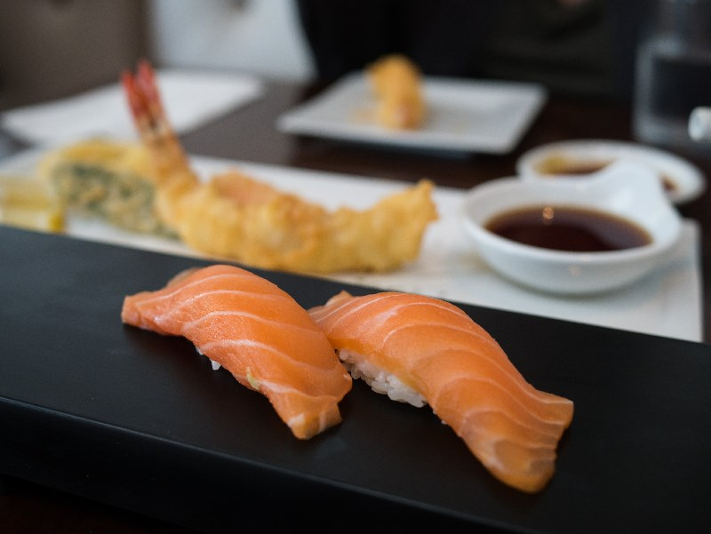
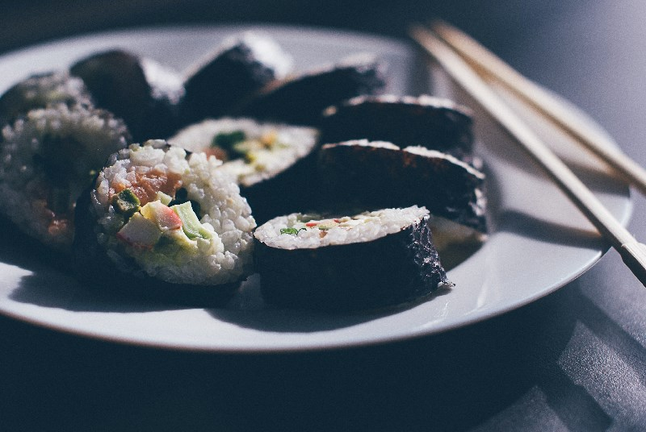

Almost poetic in its simplicity, good sushi relies on two things: the freshness of the ingredients and the knife skills of the chef.
Of course, it’s not as simple.
The combination of fish, toppings, and rice must be in harmony, each ingredient letting the others shine, but none taking the spotlight to itself.
Like all foods, sushi has went through iterations through its own history.
Originally, sushi was a way of perserving food. Fish was placed in rice and fermented, and when needed, the rice was thrown out and the fish was eaten.
In Edo, sushi makers used a fermentation process developed in the mid-1700s, placing a layer of cooked rice seasoned with rice vinegar alongside a layer of fish. The layers were compressed in a small wooden box for two hours, then sliced into serving pieces. This new method greatly reduced the preparation time for sushi.
Hanaya Yohei is often considered the creator of modern nigiri sushi, or at the very least, its first great marketer. In 1824, Yohei opened the first sushi stall in the Ryogoku district of Edo. Yohei chose his location wisely, setting up his stall near one of the few bridges that crossed the Sumida. He used a faster method of making sushi, adding rice vinegar and salt to freshly cooked rice and letting it sit for a few minutes. He then served the sushi in a hand-pressed fashion, topping a small ball of rice with a thin slice of raw fish, fresh from the bay. Because the fish was so fresh, there was no need to ferment or preserve it. Sushi could be made in a matter of minutes, rather than in hours or days. Nigiri became the new standard in sushi preparation.
In the 1970s, thanks to advances in refrigeration, the ability to ship fresh fish over long distances, and a thriving post-war economy, the demand for premium sushi in Japan exploded. Sushi bars opened throughout the country, and a growing network of suppliers and distributors allowed sushi to expand worldwide.
Modern sushi chefs have introduced new ingredients, preparation and serving methods. Traditional nigiri sushi is still served throughout the U.S., but cut rolls wrapped in seaweed or soy paper have gained popularity in recent years. The California roll is one of the most popular styles of sushi in the US, and was influential in the spread of sushi in the U.S.
